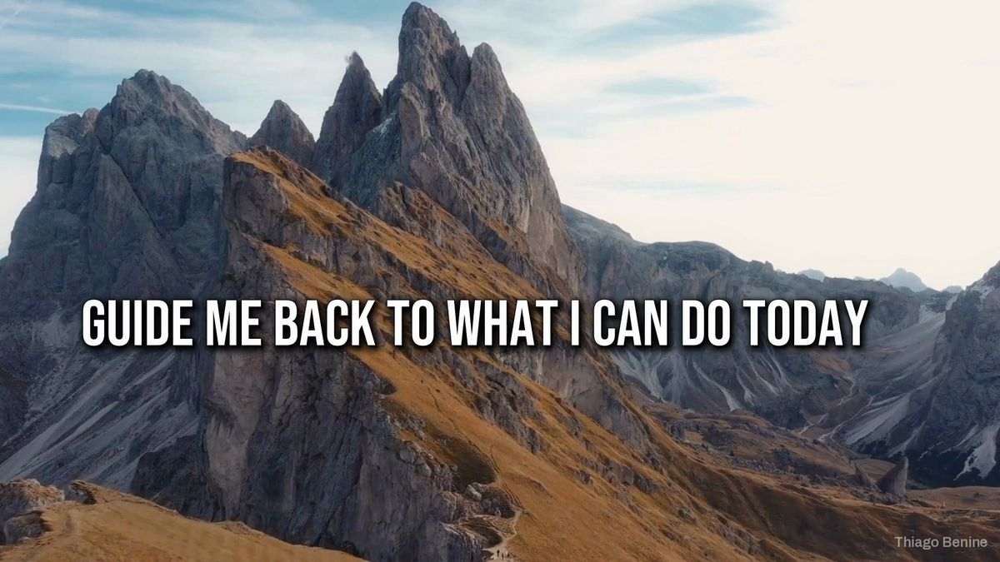
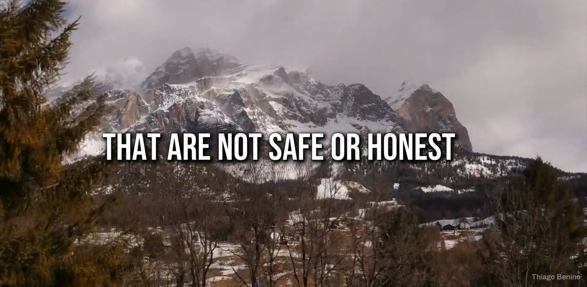
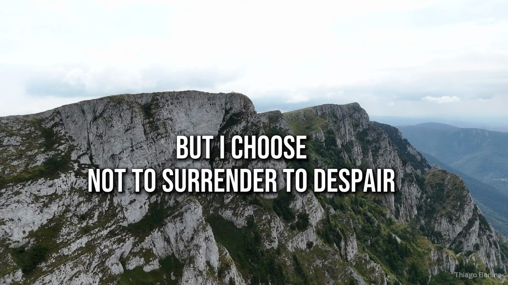
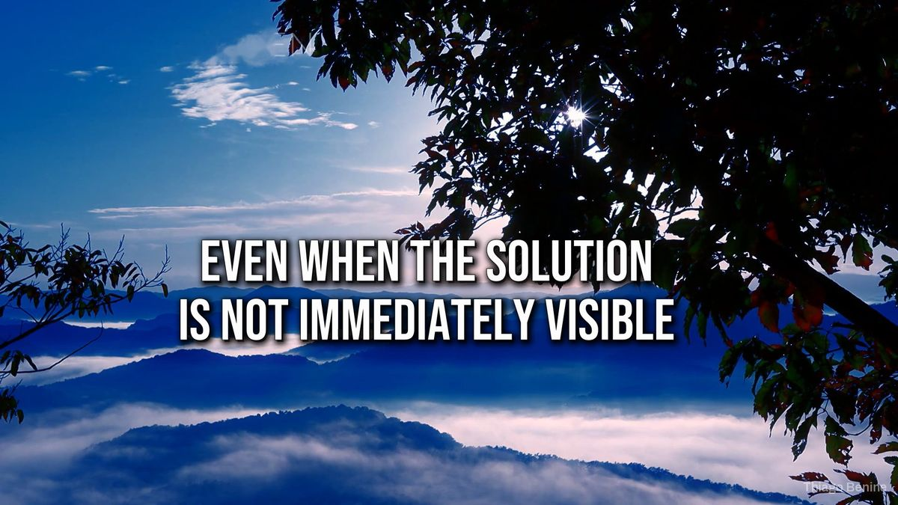

20 vídeos de oração em inglês com narração e legendas
Produção em lote para um canal devocional: voz, legendas, trechos de banco de vídeo e efeitos no padrão do canal.





Sobre o projeto
Um canal devocional em inglês precisava publicar um vídeo por dia sem perder o padrão. Foi montada uma linha de produção que gera a narração, confere cada frase, escolhe trechos de banco de vídeo e aplica legendas, câmera lenta, espelhamento, efeitos e o botão de inscrição animado. O lote de 20 vídeos saiu pronto e conferido.
O que foi entregue
- 20 vídeos narrados em inglês
- Legendas e efeitos no padrão do canal
- Linha de produção reaproveitável
Avaliação do cliente
5,0 de 5
Trabalho sério e profissional.